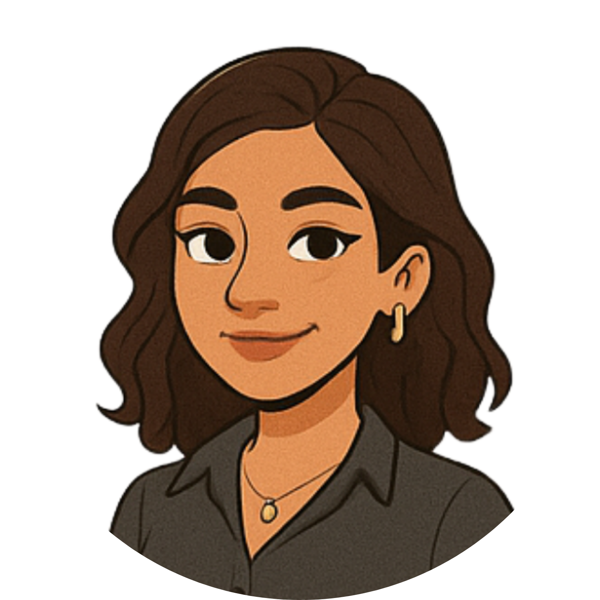

Silvana Gomes
Natural do Rio de Janeiro, Silvana sempre se destacou por sua curiosidade, dedicação e vontade de aprender. Desde cedo demonstrou interesse por tecnologia, organização e comportamento humano. Atualmente cursa Ciência da Computação na UVA e sonha em atuar com inteligência artificial, interfaces acessíveis e impacto social através da tecnologia.
Acumula mais de 2.500 horas de experiência em estágio administrativo e possui uma bagagem robusta de cursos nas áreas de informática, contabilidade e empreendedorismo. No tempo livre, gosta de estudar, criar conteúdos, treinar e explorar novos aprendizados. Seu foco está em crescer continuamente e transformar conhecimento em impacto.
Minha Jornada
- 2022: Conclusão de cursos em Informática, Contabilidade, Empreendedorismo e Assistente Administrativo
- 2023: Início do estágio administrativo e aprofundamento em organização e atendimento
- 2024: Conclusão do estágio com mais de 2.500h de experiência prática
- 2025: Início da graduação em Ciência da Computação na UVA
Você sabia?
- 🧠 É apaixonada por comportamento humano, psicologia e inteligência artificial
- 🎯 Tem facilidade com organização, atendimento ao público e etiqueta profissional
- 💬 Está sempre buscando melhorar sua comunicação e superar a timidez
- 💻 Possui conhecimento em informática, contabilidade e gestão administrativa
- 📚 Já fez mais de 1.300h em cursos profissionalizantes antes da faculdade
Sobre